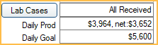
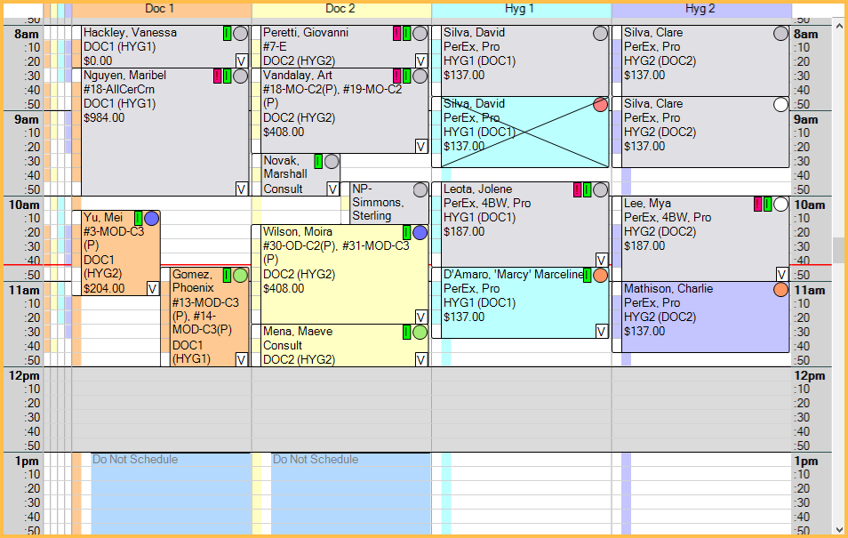

Appointments Module
The Appointments Module is where patient appointments can be viewed, scheduled, and managed.

 See our Appointments Module Playlist.
See our Appointments Module Playlist.
Appointments Toolbar
These buttons appear in the top toolbar.
- Print: Open the Appt Print Setup Print Appointments window to print appointments or Routing Slips.
- Lists: Open Appointment Lists.
- Pat Appts: Open the Appointments for Patient window to view patient appointment history and family Recall information.
- Make Appt: Schedule an appointment.
- If this is an appointment for a new patient, or the patient has only completed appointments, Edit Appointment opens.
- If the patient has scheduled, broken, unscheduled, or planned appointments, Appointments for Patient window opens to review appointment history before scheduling.
- Make Recall: Create an appointment on the Pinboard to schedule the patient's next Recall Appointment. Patient must be due for a Special Recall Type.
- To schedule recall for a family, use the dropdown and select Make Fam Recall.
- If the patient has a scheduled appointment or an appointment on the Unscheduled List, the Appointments for Patient window opens. Click Schedule Recall or Entire Family to create appointment(s) on the Pinboard.
- If the patient has no scheduled appointments or no appointments on the Unscheduled List, Appointments are created and sent to the Pinboard immediately.
- Procedures for the Special Recall Type are always automatically added to the appointment.
- Procedures for Recall Types not marked Special are added to appointments automatically when recalls are due on or before the same date as the Special Recall and Append to Special is enabled for that Recall Type.
- If Day View is selected, the Search function is brought up.
- When using Make Recall, Open Dental automatically searches for schedule openings after the Recall Due Date with the patient's assigned Secondary Provider, or Primary Provider if no Secondary is assigned. The calendar moves to the first available date. Additional dates are listed in Openings in View
- When using Make Fam Recall, Open Dental automatically searches for scheduled openings after the last Recall Due Date for all family members and searches for openings with all family members' assigned providers. The calendar moves to the first available date. Additional dates are listed in Openings in View. See
- Unsched: Send the selected appointment to the Unscheduled List.
- Break: Select an appointment and click to Break Appointment.
- Complete: Select an appointment and click to Set Appointment Complete Set Appointment Complete.
- Delete: Select an appointment and click to Delete Appointment.
- Rapid Call: If the DentalTek Rapid Call Bridge is enabled, launches the Rapid Call application. Otherwise, opens the DentalTek Rapid Call website.
Calendar
Use the calendar to quickly switch days to view past or future appointments. Today's date is surrounded by a square. The currently displayed date is highlighted.

There are various ways to change the calendar date.
- <Y / Y>: Click to move the calendar back or forward one year from the currently selected date. Click a specific day to change the schedule. If no specific date is selected within a few seconds, the calendar automatically returns to the currently selected date.
- <M / M>: Click to move the calendar back or forward one month. Click a specific day to change the schedule. If no specific date is selected within a few seconds, the calendar automatically returns to the currently selected date.
- Month and Year: Click and enter a specific date when prompted to move the schedule.
- Click a day on the calendar to update the schedule to show that day's appointments.
- M: Click to move the schedule back or forward one month from the currently selected date.
- W: Click to move the schedule back or forward one week from the currently selected date.
- Arrows: Click to move the schedule back or forward one day from the currently selected date.
- Today: Click to move the schedule to today's date.
- 3: Click to move the schedule three months forward from the currently selected date.
- 4: Click to move the schedule four months from the currently selected date.
- 6: Click to move the schedule six months from the currently selected date.
Day or Week view: Select whether to view the calendar by a single day or a full week. Enable Appointments Module defaults to week view in Preferences to see Week view by default.
- Day: Grid is divided into Operatories.
- Week: Grid is divided into separate days.
- If In Week View, only show days that have scheduled provs or appts setting is checked for the selected Appointment View, only days where opertories in view have a scheduled appointment or a scheduled provider are included (e.g., weekends may be excluded).
- If In Week View, only show days that have scheduled provs or appts setting is unchecked for the selected Appointment View, all seven days of the week (i.e., Monday - Sunday) are included.
- Appointments appear narrow, so hovering over the appointment to view bubbles may be useful.
- Move appointments within the current week by dragging and dropping, or use the Pinboard.
- Set the Week View start day in Preferences.
Pinboard and Searching for Openings
The Pinboard can be used for easy scheduling between various dates.

Click and drag scheduled appointments to the Pinboard or right-click and select Copy to Pinboard. Other appointments are automatically sent to the Pinboard when they are created. To search for available openings, use the Pinboard search function.
Appointment Views
Appointment Views determine the Operatories and providers that show and the information that shows in an appointment. It also determines the default start time when Open Dental is first opened.

The Appointment View selected when a user logs out is selected when they log back in. Click the dropdown to change views or press the associated function key on the keyboard.
When Clinics is enabled, Appointment Views are associated with specific Clinics. Changing the Clinic in the Main Menu changes the enabled Appointment View and available Appointment Views in the dropdown.
Lab Cases and Production
Track the status of Lab Cases and view estimated production.
Lab Cases: Click to open Lab Cases. Text box indicates the status of Lab Cases for the selected date. If Clinics are enabled, only the status of Lab Cases attached to appointments scheduled in the selected Clinic's Operatories, for the selected date are shown. If Headquarters is the selected Clinic, the status of all Lab Cases attached to appointments scheduled in all Operatories for the selected date is shown (including those not associated with a Clinic).
Daily Prod: View Production Totals. Production must be added to the selected Appointment View in order to view a value.
Daily Goal: View the total daily production goal for all scheduled providers in the appointment view. The value is calculated using the hourly production goals for each scheduled provider, as entered on the Edit Provider Window. Production or NetProduction must be added to the appointment view.
Confirmation Status and Other Tabs
Change the confirmation status of an appointment, and use tabs to track various information.

Confirmation Status: Select an appointment and click an option to change the Appointment Confirmation Status. The option is grayed out if the user does not have the ApptConfirmStatusEdit security permission or an appointment is not selected. Some statuses trigger Time Arrived, Time Seated, and Time Dismissed values, which affect the waiting room. Statuses that trigger these values are set in Preferences. Status options can be customized in Definitions: Appt Confirmed.
Tabs:
- Waiting Room: Displays patients who have arrived but not been seated. See Waiting Room.
- Emp: View scheduled hours for employees for the selected day. Only employees scheduled in the selected Clinic are listed. Double-click anywhere in the grid to edit the schedule.
- Prov: View scheduled hours for providers for the selected day. Only providers scheduled in the selected Clinic are listed. Double-click anywhere in the grid to edit the schedule.
- Reminders: View all Task Reminders for the logged-on user that are due for the current day, ordered by date and time. Reminders only show here through the end of the current day. An asterisk appears in the reminders tab when there are reminders for the current day.
Schedule
Text size of the schedule area can be customized using the Appointment font size preference.
Time: Use the vertical scrollbar to move through the entire 24-hour day. Set the global Time Increments in Appointment View Setup.
- The default start time is determined by the selected Appointment View. It can be a set time or a dynamic time based on the earliest appointment or provider time.
- Current time is indicated by a horizontal line that automatically moves down every minute. Customize Appointment time line color in Preferences.
- Vertical Time Bars are shown for color-coded visuals of appointment length and provider time.
Operatories: Define Operatory names, colors, and order in Operatory Setup. Define provider schedules in Schedule Setup.
- Click an Operatory header to view the default provider's name and specialty, the name of scheduled providers, their time blocks, schedule notes, and any note for the selected Clinic.
- Hover over an appointment header to view provider name and daily scheduled production totals.
- Right-click an open time block in the Operatory to add, edit, or clear Blockouts.
- See Schedule Setup Examples for recommended operatory and schedule setup.
Colors: By default, white areas indicate open times, and grey indicates closed times. Times are determined by Schedule Setup. These colors can be changed in Definitions: Appointment Colors.
Appointments: Basic appointment details are displayed an appointment box. Details in the appointment box are determined by the selected View (Appointment View).
- Double-click the box to open the Edit Appointment Window or right-click to select more options.
- Every appointment has a second optional provider for hygiene so that only one appointment has to be made even if a patient is technically seeing two providers.
- If Disable appointment bubbles is unchecked for the selected Appointment View, the appointment bubble appears when hovering over an appointment. To customize the appointment bubble, see Display Fields.
- When appointments are set complete, the color is changed. Gray is the default, but color can be customized in Definitions: Appointment Colors.
- Broken Appointments are crossed out.
- If the preference, Appointments allow overlap, is enabled, multiple appointments can be scheduled in the same Operatory at the same time. Appointments are ordered from oldest creation date to newest, starting on the left.
Moving Appointments:
- Completed appointments cannot be moved to the Pinboard or, when using Week View, a different day. Completed appointments can be dragged to a different Operatory or time on the same day as scheduled.
- When moving an appointment marked Is Hygiene to an Operatory not marked Is Hygiene, the Is Hygiene checkbox on the appointment is not unchecked automatically. To uncheck this box, so the hygienist is no longer the main provider on the appointment, see Edit Appointment.
- When moving an appointment to an Operatory marked Set Prospective in Operatory Setup, users receive a prompt to set the patient's status to Prospective. Clicking OK changes the patient's status and disables any existing Recall.
- To move an appointment, click and drag it to a different time, day (in Weekly view), or to the Pinboard.
- When moving an appointment to a different Operatory, depending on the Appointment provider change behavior set in Preferences, users may be prompted to update the provider if the current appointment provider differs from the Operatory provider.
- If the appointment Time Locked box is unchecked, users with the Appointment Resize permission are prompted to change the appointment length if the appointment time pattern does not match the default time pattern for the attached procedures.
Right-click options:
- On an Appointment:
- Copy to Pinboard: Copy the appointment to the Pinboard.
- Send to Unscheduled List: Send the appointment to the Unscheduled List.
- Break Appointment: Break the appointment.
- Mark as ASAP: Mark the appointment as ASAP and add it to the ASAP List.
- Set Complete: Unscheduled List.
- Delete: Delete the selected appointment.
- Patient Appointments: Click to view other Patient Appointments.
- Print Label: Print single appointment reminder Labels.
- Print Card/Print Card for Entire Family: Print a future appointment reminder postcard for a single patient or family. Reminder cards cannot be customized.
- Routing Slip: Print Routing Slips.
- Appointment Tasks: Open a list of tasks attached to the appointment. Double-click a row in the list to open the Task Window.
- Go To Ortho Chart: Open the Ortho Chart for the selected patient.
- Only shows when information exists in the Ortho Chart or when the preference, Show Ortho Chart in appointment options, is enabled.
- This menu item may change. The text is based on the name of the first tab set up in Ortho Chart Setup (e.g., if the tab name is Orthodontic Patient Chart, the option is Go To Orthodontic Patient Chart).
- Call Home Phone: Click to call the home phone for the selected patient using the DentalTek Bridge. Requires an additional service.
- Call Wireless Phone: Click to call the wireless phone for the selected patient using the DentalTek bridge. Requires an additional service.
- Send Text: Send a Text Message. Opens a blank text message window.
- Send Confirmation Text: Send a text message for the selected appointment using the default confirmation message set up in Confirmation List Setup. To send a single confirmation text for multiple appointments for a family, go to the Confirmation List.
- Send eClipboard BYOD Text: Send a text message to the patient that includes a link to eClipboard BYOD, if allowed in eClipboard Setup. Allows patients to download eClipboard to their own device in order to check in. See BYOD: What Patient Sees.
- Show eClipboard QR: Display a QR code to scan with an eClipboard device. The patient is automatically checked in and can quickly access the Check-in checklist.
- Send Come In Text: Send a message notifying a patient their appointment is ready. Only available when the patient has already been sent an automated Arrival.
- CareCredit: Appears when CareCredit is not enabled. This option is hidden when advertising for CareCredit is turned off.
- CareCredit Accept/Decline Offer: Only displays for CareCredit users. Available for patients with a Quickscreen status of pre-approved.
- CareCredit Application Needed: Only displays for CareCredit users. Available for patients with a Quickscreen status of unable to pre-approve.
- On an Empty part of the Schedule:
- Blockout Options: For a detailed breakdown of these options see Blockouts.
- Text ASAP List (manual): Open ASAP List.
- Text Appointments for Day, Op only: Opens the Text Message window shown below. Allows users to send the same message to all patients with an appointment in the Operatory and day being right-clicked.
 Note: For multiple patients with the same wireless number a single message is sent.
Note: For multiple patients with the same wireless number a single message is sent. - Text Appointments for Day, Current View only: Same as above, but for all appointments in the current Appointment View.
- Text Appointments for Day, Clinic only: Same as above, but for all appointments for the currently selected Clinic.
- Update Provs on Future Appts: See Update Provs on Future Appts.